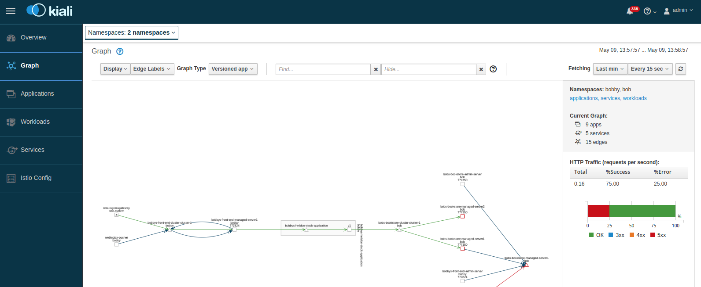

Istioサポート
目次
- 概要
- 制限
- Istioバージョンの決定
- Istioサポートでのオペレータの設定
- Istioサポートを含むドメインの作成
- トラフィック管理
- 分散トレース
- 自動的に追加されたネットワーク・チャネル
- セキュリティ
概要
この手順では、Istioがすでにインストールおよび構成されているKubernetesクラスタを使用していることを前提としています。 オペレータはIstioをインストールしません。
Istioの独自の実装を持つRed Hat OpenShift Service Meshの場合は、インストールに関する正しいバージョンのドキュメントを参照してください。 OpenShiftサービス・メッシュのインストール4.10
Istioサポートでは、Istioサイドカー・インジェクションが有効なときに、オペレータおよびオペレータによって管理されるWebLogicドメインを実行できます。 Istioゲートウェイおよび仮想サービスを使用して、これらのドメインにデプロイされているアプリケーションにアクセスできます。 アプリケーションに適切なトレース・コードが含まれている場合は、Jaegerなどの分散トレースを使用して、ドメイン間およびトレースが有効になっている他のコンポーネントやサービスに対してリクエストをトレースすることもできます。
WebLogic Kubernetes Operatorでは、IstioまたはRed HatのOpenShiftサービス・メッシュについて理解していることを前提としています。 新しい場合は、オペレータの操作に進む前に、それぞれのドキュメントを読み、Bookinfoサンプル・アプリケーションを操作して、メッシュについて理解し、環境内で正常に動作していることを確認することを強くお薦めします。
Istioの詳細については、「Istioとは」を参照してください。
Redhat OpenShiftサービス・メッシュについては、次を参照してください
制限
Istioの現在のサポートには、次の制限があります:
-
オペレータはIstioバージョン1.7以上をサポートし、1.7.3から1.11.xまでの単一および複数クラスタIstioインストールでテストされています。
-
Red Hat OpenShift Service Meshの場合、Red Hat OpenShift Container Platform version 4.10.20、Service Mesh 2.2.1をテストしました。
-
default、default-secureおよびdefault-adminのchannelNameを持つdomain.spec.adminServer.adminService.channelsを使用してNodePortを設定することはできません。 試行すると、Istioと組み合せてドメインをデプロイするときにエラーが発生します。 -
環境内の
istio-ingressgatewayサービスにEXTERNAL-IPが定義されておらず、外部でWLSTコマンドを実行する場合は、「WLSTの使用」を参照してください。
Istioバージョンの決定
インストールされているIstioビルド・バージョンを確認するには、istioctl versionコマンドを使用します。 例えば:
$ istioctl version
client version: 1.11.1
control plane version: 1.11.1
data plane version: 1.11.1 (1 proxies)
Istioサポートでのオペレータの設定
Istioサポートでは、Istioの自動サイドカー・インジェクションを有効にし、ドメイン・リソース構成を変更するために、オペレータ・ネームスペースとドメイン・ネームスペースにラベルを付ける必要があります。 この項では、オペレータ・ネームスペースのステップを説明します。ドメインのステップについては、後の項で説明します。
オペレータをインストールする前に、オペレータを実行するネームスペースを作成し、ラベルを付けます。
$ kubectl create namespace weblogic-operator
非OpenShiftのサービス・メッシュの場合は、次のようにネームスペースにラベルを付けます:
$ kubectl label namespace weblogic-operator istio-injection=enabled
ネームスペースにラベルを付けた後、「オペレータのインストール」を使用できます。
OpenShiftサービス・メッシュを使用する場合、ネームスペース全体のIstioサイドカー・インジェクションをサポートしていないため、次のように、--setオプションを使用してHelmを使用してオペレータをインストールまたは更新するときに、レベルのサイドカー・インジェクションの注釈を設定する必要があります:
--set "annotations.sidecar\.istio\.io/inject=true"
オペレータのポッドが開始されると、Istioはistio-initというinitContainerとEnvoyコンテナistio-proxyを自動的にインジェクトします。
これは、次のコマンドを使用して検証できます:
$ kubectl --namespace weblogic-operator get pods
$ kubectl --namespace weblogic-operator get pod weblogic-operator-xxx-xxx -o yaml
2番目のコマンドで、weblogic-operator-xxx-xxxをポッドの名前に変更します。
Istioサポートを含むドメインの作成
ドメインのIstioサポートを設定するには、そのネームスペースのラベル付けとdomain.spec.configuration.istio属性の定義が必要です。
ドメイン・ネームスペースの設定
Istio自動サイドカー・インジェクションを有効にしてドメインを実行できるようにするには、ドメインを実行するネームスペースを作成し、ドメインをデプロイする前に自動インジェクション用にラベル付けします。
$ kubectl create namespace domain1
$ kubectl label namespace domain1 istio-injection=enabled
ドメイン・リソースの構成
ドメインのIstioサポートを有効にするには、次の例に示すように、ドメイン・カスタム・リソースYAMLファイルにdomain.spec.configuration.istioセクションを追加する必要があります:
apiVersion: "weblogic.oracle/v8"
kind: Domain
metadata:
name: domain2
namespace: domain1
labels:
weblogic.domainUID: domain2
spec:
... other content ...
configuration:
istio:
enabled: true
readinessPort: 8888
replicationChannelPort: 4564
localhostBindingsEnabled: false
各spec.configuration.istio属性については、次の説明を参照してください:
-
enabled: Istioサポートを有効にするには、istioセクションを含めて、enabled: trueを次のように設定する必要があります。 -
readinessPort: この属性はオプションであり、指定されていない場合はデフォルトで8888になり、レディネス・ヘルス・チェックに使用されます。 -
replicationChannelPort: この属性はオプションであり、指定されていない場合はデフォルトで4564に設定されます。オペレータは、サーバー間のEJBおよびサーブレット・セッション状態レプリケーション・トラフィックを処理するために、このポートを持つクラスタの一部である各WebLogic ServerにT3プロトコルWebLogicネットワーク・アクセス・ポイントを作成します。この設定は、WebLogicクラスタ構成がすでに
replication-channel属性を定義しているクラスタでは無視されます。 -
localhostBindingsEnabled: この設定は、オペレータ・バージョン3.3.3に追加されました。Helmチャート構成値istioLocalhostBindingsEnabledにデフォルト設定されます。この値はデフォルトでtrueに設定されます。trueの場合、オペレータは、既存のチャネルおよびプロトコルごとにlocalhostバインディングを持つWebLogicネットワーク・アクセス・ポイントを作成します。 1.10より前のIstioバージョンではtrueを使用し、バージョン1.10以降ではfalseに設定します。Istioバージョン localhostBindingsEnabled ノート Pre-1.10 trueサポート対象。 trueがデフォルトであることに注意してください。Pre-1.10 falseサポートされていません。 1.10以降 trueサポートされていません。 1.10以降 falseサポート対象。 Red Hat OpenShiftバージョン localhostBindingsEnabled ノート 前 4.11 trueまたは未設定サポート対象。 前 4.11 falseまたは未設定サポート対象外 4.11以降 trueサポート対象外 4.11以降 falseサポート対象。
ノート : ドメインで実行されているIstioバージョンに対してlocalhostBindingsEnabledが正しく設定されていない場合は、次のようになります:
-
管理対象サーバーのポッドで実行されている管理対象WebLogic Serversは、WebLogic管理サーバーに接続できない場合があります。 その結果、管理サーバーと通信する障害に関するネットワーキング・メッセージが記録され、
Boot identity not validエラーも発生する可能性があります。 -
管理対象サーバー・ポッド内の
weblogic-serverコンテナは、レディネス・プローブの障害のためにready状態に達しません。 たとえば、Istioバージョン1.10以降の実行時にlocalhostBindingsEnabledがtrueに設定されている場合、kubectl get podsは次のように出力されます:$ kubectl -n sample-domain1-ns get podsNAME READY STATUS RESTARTS AGE sample-domain1-admin-server 1/2 Running 0 2mkubectl describe podコマンドは、レディネス・プローブ・イベント障害を表示します:$ kubectl describe pod sample-domain1-admin-server -n sample-domain1-nsEvents: Type Reason Age From Message ---- ------ ---- ---- ------- Warning Unhealthy 60s (x10 over 105s) kubelet Readiness probe failed: HTTP probe failed with statuscode: 500また、管理対象サーバー・ポッド内の
istio-proxyコンテナのロギング出力を表示すると、レディネス・プローブが管理対象サーバーのエンドポイントへの接続を正常に確立できなかったことが示されます:$ kubectl logs sample-domain1-admin-server -n sample-domain1-ns -c istio-proxy2021-10-22T20:35:01.354031Z error Request to probe app failed: Get "http://192.168.0.93:8888/weblogic/ready": dial tcp 127.0.0.6:0->192.168.0.93:8888: connect: connection refused, original URL path = /app-health/weblogic-server/readyz app URL path = /weblogic/ready
ノート: OpenShiftサービス・メッシュを使用する場合、ネームスペース全体のIstioサイドカー・インジェクションがサポートされていないため、次のようにドメイン・リソースでレベルのサイドカー・インジェクションの注釈を設定する必要があります:
-
apiVersion: "weblogic.oracle/v8" kind: Domain metadata: name: domain2 namespace: domain1 labels: weblogic.domainUID: domain2 spec: ... other content ... serverPod: ... annotations: sidecar.istio.io/inject: "true" configuration: istio: enabled: true readinessPort: 8888 replicationChannelPort: 4564 localhostBindingsEnabled: false
ドメインYAMLファイルの適用
ドメインYAMLファイルの変更後、次の方法で適用します:
$ kubectl apply -f domain.yaml
すべてのサーバーが起動すると、次のような出力が表示されます:
$ kubectl -n sample-domain1-ns get pods
NAME READY STATUS RESTARTS AGE
sample-domain1-admin-server 2/2 Running 0 154m
sample-domain1-managed-server1 2/2 Running 0 153m
sample-domain1-managed-server2 2/2 Running 0 153m
istioctl proxy-statusを使用している場合は、メッシュ・ステータスが表示されます:
$ istioctl proxy-status
NAME CDS LDS EDS RDS PILOT VERSION
istio-ingressgateway-5c7d8d7b5d-tjgtd.istio-system SYNCED SYNCED SYNCED NOT SENT istio-pilot-6cfcdb75dd-87lqm 1.5.4
sample-domain1-admin-server.sample-domain1-ns SYNCED SYNCED SYNCED SYNCED istio-pilot-6cfcdb75dd-87lqm 1.5.4
sample-domain1-managed-server1.sample-domain1-ns SYNCED SYNCED SYNCED SYNCED istio-pilot-6cfcdb75dd-87lqm 1.5.4
sample-domain1-managed-server2.sample-domain1-ns SYNCED SYNCED SYNCED SYNCED istio-pilot-6cfcdb75dd-87lqm 1.5.4
weblogic-operator-7d86fffbdd-5dxzt.sample-weblogic-operator-ns SYNCED SYNCED SYNCED SYNCED istio-pilot-6cfcdb75dd-87lqm 1.5.4
Istio対応ドメインでのアプリケーションの公開
ドメインがIstioサポートで実行されている場合、Traefikなどのイングレス・コントローラを使用するかわりに、Istioイングレス・ゲートウェイを使用してアプリケーションへの外部アクセスを提供する必要があります。 Istioイングレス・ゲートウェイを使用すると、Kialiでトラフィックを表示し、エントリ・ポイントからクラスタへの分散トレースを使用することもできます。
ドメインへの外部アクセスを構成するには、次の例に示すように、Istio GatewayおよびVirtualServiceを作成する必要があります:
---
apiVersion: networking.istio.io/v1alpha3
kind: Gateway
metadata:
name: domain1-gateway
namespace: domain1
spec:
selector:
istio: ingressgateway
servers:
- hosts:
- '*'
port:
name: http
number: 80
protocol: HTTP
---
apiVersion: networking.istio.io/v1alpha3
kind: VirtualService
metadata:
name: domain1-virtualservice
namespace: domain1
spec:
gateways:
- domain1-gateway
hosts:
- '*'
http:
- match:
- uri:
prefix: /console
- port: 7001
route:
- destination:
host: sample-domain1-admin-server.sample-domain1-ns.svc.cluster.local
port:
number: 7001
- match:
- uri:
prefix: /testwebapp
- port: 8001
route:
- destination:
host: sample-domain1-cluster-cluster-1.domain1.svc.cluster.local
port:
number: 8001
この例では、ポート80でHTTPを使用して任意のホスト名のリクエストを受け入れるゲートウェイと、これらのすべてのリクエストをネームスペースdomain1のcluster-1のクラスタ・サービスにルーティングする仮想サービスを作成します。 ノート: 本番環境では、hostsを適切なDNS名に制限する必要があります。
ゲートウェイおよび仮想サービスを設定したら、イングレス・ホストおよびポートを介してアクセスできます。 「イングレスIPおよびポートの決定」を参照してください。
Istioを使用したイングレスの提供の詳細は、「Istioドキュメント」を参照してください。
トラフィック管理
Istioは、Kialiでトラフィックをビジュアル化する機能など、トラフィック管理機能を提供します。 この機能を使用するためにアプリケーションを変更する必要はありません。 ポッドにインジェクトされるIstioプロキシ(Envoy)サイドカーはそれを提供します。 次のイメージは、トラフィック・フローの例を示しています: 左側のIstioゲートウェイからdomain1というドメインへ。
この例では、トラフィックがどのようにクラスタ・サービスに流れ、次に個々の管理対象サーバーに流れるかを確認できます。
詳細は、「Istioトラフィック管理」を参照してください。
分散トレース
Istioは、Jaegerでトレースを表示する機能など、分散トレース機能を提供します。 ただし、分散トレースを使用するには、まずWebLogicアプリケーションを計測する必要があります。たとえば、「Jaeger Javaクライアント」を使用します。 次のイメージは、前のイメージに示すように、システム経由の同じパスに続くトランザクションを示す分散トレースの例を示しています。

詳細は、「Istioでのトレースの分散」を参照してください。
自動的に追加されたネットワーク・チャネル
Istioがドメインに対して有効になっている場合、オペレータは各WebLogic Serverにネットワーク・チャネルを自動的に追加します。
v1.10より前のIstioバージョン用のネットワーク・チャネルを追加しました
1.10より前のIstioバージョンをサポートするように構成されたドメインをデプロイすると、Istioがトラフィックをルーティングできるように、オペレータは次のネットワーク・チャネル(ネットワーク・アクセス・ポイントとも呼ばれる)をWebLogic構成に自動的に追加します:
非SSLトラフィックの場合:
| 名前 | ポート | プロトコル | コンテナ・ポートとして公開 |
|---|---|---|---|
http-probe |
構成Istio readinessPortから |
http |
いいえ |
tcp-default |
サーバー・リスニング・ポート | t3 |
はい |
http-default |
サーバー・リスニング・ポート | http |
はい |
tcp-snmp |
サーバー・リスニング・ポート | snmp |
はい |
tcp-cbt |
サーバー・リスニング・ポート | CLUSTER-BROADCAST |
いいえ |
tcp-iiop |
サーバー・リスニング・ポート | http |
いいえ |
SSLトラフィックの場合、サーバーでSSLが有効になっていると、次のようになります:
| 名前 | ポート | プロトコル | コンテナ・ポートとして公開 |
|---|---|---|---|
tls-default |
サーバーSSLリスニング・ポート | t3s |
はい |
https-secure |
サーバーSSLリスニング・ポート | https |
はい |
tls-iiops |
サーバーSSLリスニング・ポート | iiops |
いいえ |
tls-ldaps |
サーバーSSLリスニング・ポート | ldaps |
いいえ |
tls-cbts |
サーバー・リスニング・ポート | CLUSTER-BROADCAST-SECURE |
いいえ |
管理サーバーでWebLogic管理ポートが有効になっている場合:
| 名前 | ポート | プロトコル | コンテナ・ポートで公開 |
|---|---|---|---|
https-admin |
WebLogic管理ポート | https |
はい |
Istioバージョンv1.10以降にネットワーク・チャネルを追加しました
Background:
Istioバージョン1.10以降、Istioのネットワーキング動作が簡素化されました。 各Istioサイドカー(Envoyプロキシ)で動作するIstioネットワーク・プロキシが、現在のポッドのlocalhostインタフェースにネットワーク・トラフィックをリダイレクトしなくなり、ポッドのIPに関連付けられたネットワーク・インタフェースに直接転送されるように変更されました。 つまり、レディネス・プローブを有効にする以外は、オペレータが各WebLogicポッドに追加のlocalhostネットワーク・チャネルを作成する必要はありません。
Istio 1.10で始まるIstioネットワークの変更の詳細については、「Istio 1.10での今後のネットワークの変更」を参照してください。
チャネル動作:
Istioバージョン1.10以降をサポートするように構成されたドメインをデプロイすると、ポッドのレディネス・プローブがサーバー・ポッドのネットワーク・インタフェースにバインドされるように、オペレータは各サーバーのWebLogic構成にHTTPプロトコル・ネットワーク・チャネル(ネットワーク・アクセス・ポイントとも呼ばれます)を自動的に追加します:
| チャネル名 | ポート | リスニング・アドレス | プロトコル | コンテナ・ポートとして公開 |
|---|---|---|---|---|
http-probe-ext |
構成Istio readinessPortから |
サーバー・ポッドのIPアドレス | http |
いいえ |
WebLogic EJBおよびサーブレット・セッション状態レプリケーション・トラフィックのネットワーク・チャネルが追加されました
Istioサービス・メッシュでWebLogic EJBおよびサーブレット・セッション状態レプリケーション・トラフィックをサポートするために、オペレータ・バージョン3.3.3以降では、ドメイン・リソースのdomain.spec.configuration.istio.replicationChannelPortを使用してチャネル(ネットワーク・アクセス・ポイント)が自動的に作成されます:
| 名前 | ポート | プロトコル | コンテナ・ポートとして公開 |
|---|---|---|---|
istiorepl |
構成Istio replicationChannelPortから |
t3 |
いいえ |
オペレータは、各WebLogicクラスタ構成にreplication-channel属性も設定します:
<cluster>
<name>cluster-1</name>
<replication-channel>istiorepl</replication-channel>
<cluster>
そのようなチャネルがすでにWebLogicクラスタ用に構成されている場合、オペレータはレプリケーション・チャネルを作成したり、クラスタのreplication-channel構成を変更したりしません。 (チャネルがすでに存在する場合は不要です。)
セキュリティ
Istioは、Istioサービス・メッシュ環境の保護に使用できる豊富なセキュリティ機能セットを提供します。 詳細については、Istio 「セキュリティ」を参照してください。 次にシナリオの例を示します。
相互TLS
デフォルトでは、Istioサイドカー・プロキシ間のすべてのトラフィックはメッシュ内で相互TLSを使用します。 ただし、メッシュ内のサービスには、メッシュ外の他のポッドから引き続きアクセスできます。 たとえば、domain-1がサイドカー・インジェクションでデプロイされているため、メッシュ内、別のドメインdomain-2がサイドカー・インジェクションなしでデプロイされているため、メッシュ外に配置されます。 domain-2内のサービスは引き続きdomain-1内のサービスにアクセスできますが、トラフィックは暗号化されていないPlainトラフィックになります。 これは、デフォルトでは、IstioはPERMISSIVEモードを使用してトラフィックを構成するため、これはPlainトラフィックとmutual TLSトラフィックの両方を受け入れることができることを意味します。 メッシュ全体をロック・ダウンするか、メッシュ内のネームスペースによってのみmutual TLSトラフィックを許可することで、この動作を制限できます。
メッシュ全体をロックダウンする場合、次の操作を実行できます:
kubectl apply -n istio-system -f - <<EOF
apiVersion: security.istio.io/v1beta1
kind: PeerAuthentication
metadata:
name: "default"
spec:
mtls:
mode: STRICT
EOF
ネームスペースの場合のみ、次のことができます:
kubectl apply -n <your namespace> -f - <<EOF
apiVersion: security.istio.io/v1beta1
kind: PeerAuthentication
metadata:
name: "default"
spec:
mtls:
mode: STRICT
EOF
Istio 「相互TLS移行」を参照してください。
認可ポリシー
Istioは、AuthorizationPolicyを使用してポリシーベースの認可を提供します。 メッシュにデプロイされたサービスへのアクセスを拒否または許可するポリシーを設定できます。 たとえば、サービス・アカウントを持つ別のネームスペースからのみ、ドメイン内の特定のサービスへのアクセスを制限する場合です。
クライアント・ネームスペースのサービス・アカウントを作成します。
kubectl -n domain2-ns create serviceaccount privaccess
クライアント・デプロイメント・ポッドでサービス・アカウントを設定します。 たとえば、Operatorの別のWebLogic Domainの場合は、domain.spec.serverPodにServiceAccountNameを指定します。
spec:
serverPod:
serviceAccountName: privaccess
ターゲット・サービスのAuthorizationPolicyを作成します。
apiVersion: security.istio.io/v1beta1
kind: AuthorizationPolicy
metadata:
name: privaccess
namespace: domain1-ns
spec:
action: ALLOW
rules:
- from:
- source:
principals: ["cluster.local/ns/domain2-ns/sa/privaccess"]
to:
- operation:
methods: ["GET"]
paths: ["/domain1-priv-service"]
Istio 「認可ポリシー」を参照してください。
宛先ルール
Istioでは、ルーティングの発生後にサービスに適用されるトラフィック管理ポリシーを定義できます。 これを使用して、ロード・バランシング、サイドカーからの接続プール・サイズ、外れ値検出設定を制御し、ロード・バランシング・プールから異常なホストを検出して削除できます。 メッシュ全体またはネームスペース・ベース全体ではなく、サービス・レベルの相互TLS要件を設定することもできます。
たとえば、サービス・レベルの相互TLSを構成するには:
apiVersion: networking.istio.io/v1alpha3
kind: DestinationRule
metadata:
name: sample-domain1-service
spec:
host: sample-domain1-cluster-cluster-1.sample-domain1-ns.svc.cluster.local
trafficPolicy:
tls:
mode: ISTIO_MUTUAL
たとえば、ハッシュ・ベースのハッシュ・キーuser_cookieを使用してサービスのスティッキー・セッションを構成するには:
apiVersion: networking.istio.io/v1alpha3
kind: DestinationRule
metadata:
name: sample-domain1-service
spec:
host: sample-domain1-cluster-cluster-1.sample-domain1-ns.svc.cluster.local
trafficPolicy:
loadBalancer:
consistentHash:
httpCookie:
name: user_cookie
ttl: 0s
Istio 「宛先ルール」を参照してください。
イングレス・ゲートウェイ
イングレス・ゲートウェイは、Kubernetes Ingressと同様の機能を提供しますが、より高度な機能があります。
たとえば、ゲートウェイでSSL終了用にイングレス・ゲートウェイを構成するには:
- TLS証明書およびシークレットを作成します。
$ openssl req -x509 -nodes -days 365 -newkey rsa:2048 -keyout /tmp/tls1.key -out /tmp/tls1.crt -subj "/CN=secure-domain.org"
$ kubectl -n weblogic-domain1 create secret tls domain1-tls-cert --key /tmp/tls1.key --cert /tmp/tls1.crt
- イングレス・ゲートウェイを作成します。
apiVersion: networking.istio.io/v1alpha3
kind: Gateway
metadata:
name: sample-domain1-gateway
namespace: sample-domain1-ns
spec:
selector:
istio: ingressgateway
servers:
- port:
number: 443
name: https
protocol: HTTPS
tls:
mode: SIMPLE
credentialName: domain1-tls-cert
hosts:
- 'secure-domain.org'
- port:
number: 80
name: http
protocol: HTTP
hosts:
- 'regular-domain.org'
たとえば、SSLパススルー用にイングレス・ゲートウェイを構成するには:
apiVersion: networking.istio.io/v1alpha3
kind: Gateway
metadata:
name: sample-domain1-gateway
namespace: sample-domain1-ns
spec:
selector:
istio: ingressgateway
servers:
- port:
number: 443
name: https
protocol: HTTPS
tls:
mode: PASSTHROUGH
hosts:
- 'secure-domain.org'
- port:
number: 80
name: http
protocol: HTTP
hosts:
- 'regular-domain.org'
Istio Ingressを参照してください。